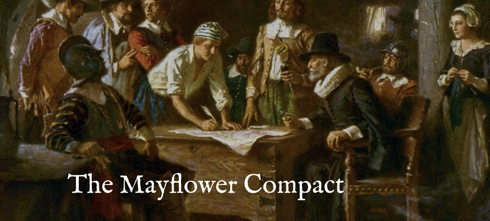

The Foundation of American Self-Governance (1620)
Before coming to the New World, the Pilgrims lived in Leyden, Holland from 1608 to 1620. As the passengers aboard the Mayflower journeyed across the Atlantic, it became apparent that they needed to consent voluntarily to a cooperative form of government for their survival in an alien land.
"In the name of God, Amen. We, whose names are underwritten, the Loyal Subjects of our dread Sovereign Lord, King James... do by these presents, solemnly and mutually in the Presence of God and one of another, covenant and combine ourselves together into a civil Body Politick, for our better ordering and Preservation, and Furtherance of the Ends aforesaid..."
SIGNERS

The Signing of the Mayflower Compact, 1620